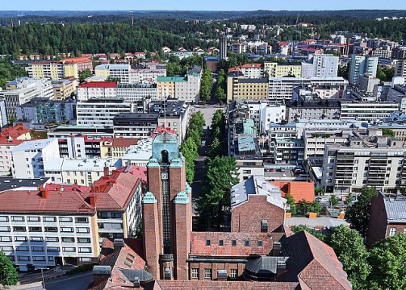
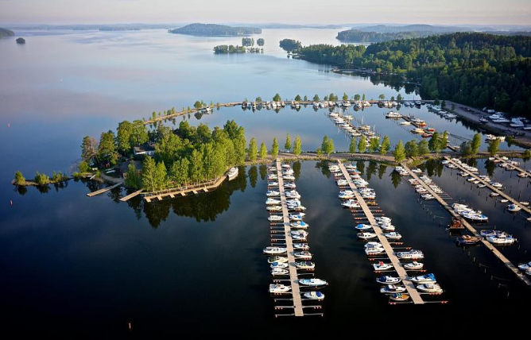
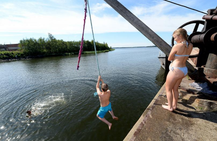

Global
This small city in Finland is leading the way as a model sustainable city
By Maeve Campbell • Updated: 24/09/2021
Finland is a vast country of 180,000 lakes and 76 per cent forest, but the population is very small at only 5.5 million. Perhaps it’s no coincidence then that it was voted the happiest country in the world in 2021? With so much nature on offer and enough room for everyone to live comfortably.
Add to that a free education system (widely regarded as the best in the world), an all-female government cabinet and the fact there are more saunas than cars – and it seems like something of a utopia.
Of course, Finland isn’t perfect. The country tackles societal problems of racism and transphobia and has an Indigenous population (Sami) who are largely excluded from government policy and face prejudice outside of their communities - not to mention grey, rainy weather for the majority of the year.
So realistically, Finland is just a normal country, like the rest of us in Europe, trying its best to be progressive and inclusive within its own cultural framework.
But when it comes to sustainability, that’s where it stands out. Scandinavian countries are well-known for their green credentials, but one city in Finland is leading the way as a role model to the rest of the world – and it’s not Helsinki.
“Its transition from a traditional, industrial town into a modern green city has become a European success story.”
Lahti won the award for European Green Capital in 2021, as the smallest and most northern city to be crowned so far. Its transition from a traditional, industrial town into a modern green city has become a European success story, which gives hope to the rest of us struggling to see the light at the end of the climate tunnel
What is life like in Lahti?
When you imagine an environmentally forward-thinking city, you might think of buildings full of vertical gardens, high-tech transport and solar-panelled pavements. Lahti (pronounced Lachti) is far from that image. Rather than standing out, it’s a humble city with identical apartment buildings, wide streets and no shortage of cyclists.
It’s a city with sustainability at its core – green solutions are plentiful but they exist behind the scenes, embedded into the town planning. From energy-efficient homes and schools and a reliance on 100 per cent renewable sources, to a unique groundwater system resulting in the world’s best drinking water, certified by UNESCO, there is nothing Lahti has not considered.
“A field which used to be a landfill site is now an open green space left to thrive and grow without mountains of rubbish on top of it.”
The city has already cut its overall emissions by 70 per cent, while 51 per cent of urban travel is via public transport, cycling and walking, and they got rid of coal for good in 2019. Now Lahti is heated with recycled fuel and local, certified wood from the bioenergy plant.
When it comes to recycling, the approach is almost religious – and that’s why it works so well. 99 per cent of Lahti’s household waste is currently utilised. 46 per cent is used to create recycled materials and 53 per cent is used to produce energy.

The Kujala waste centre is a concrete example of an innovative environment built together with local people, businesses and public sector waste management companies. Just next door is a field which used to be a landfill site, but is now an open green space left to thrive and grow without mountains of rubbish on top of it.
Ultimately, Lahti’s aim is to have a zero waste circular economy by 2050.
It all started with the lake
With so few people in the city of Lahti, you might argue that it’s easier to be environmentally responsible. But it wasn’t always so green. It was an industrial town for decades and eventually urbanisation took its toll on the main Lake Vesijärvi, making it one of the most polluted lakes in Finland by 1975.
“Not a single person would have gone for a swim in the lake in the 70s. People didn’t want to talk about the state of the lake,” says limnologist (lake specialist) Juha Keto. “The lake was filled with rubbish, algae and seaweed. You could have walked on the lake – that’s how bad it was. Fishermen would set their boats to sail from Lahti’s port eager to reach clearer waters and leave behind the stench of sulphur.”
The same year, the Vesijärvi 1 Project began, which was “the largest restoration of a food web in the world”. More than 1 million kilos of roach were removed from the Enonselkä Basin and over a million young pike-perch were introduced to the lake by 1987. This resulted in a significant decrease in harmful blue algae.
The water quality greatly improved and the lake is now rich in aquatic plants and fish. People go there to swim all year round, from the warmest summer days to the iciest winter evenings. Many do so to help with stress levels and improve their wellbeing.
According to the Finnish Society of Sport Sciences, around 150,000 Finns are regular ice swimmers. Physiologically, the icy water is said to have immensely beneficial effects on mental health.

“We saved our lake together. Nothing would have changed if I was doing this alone.”
-Juha Keto-Limnologist

Because of this important conservation work, the city was soon recognised for its environmental expertise and in 1996 the Department of Environmental Ecology of the University of Helsinki was established in Lahti.
“We organise many events for the lake, including over 580 lake evenings where I taught people about Vesijärvi. A lot of local people wanted to participate and take action for our lake,” says Keto.
“We saved our lake together. Nothing would have changed if I was doing this alone.”
Article from: https://www.euronews.com/green/2021/09/24/this-small-city-in-finland-is-leading-the-way-as-a-model-sustainable-city